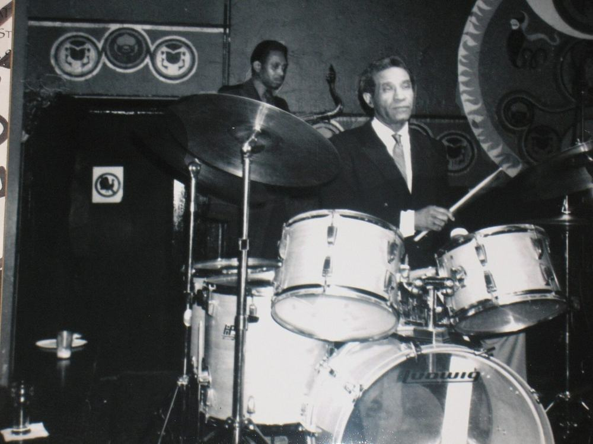
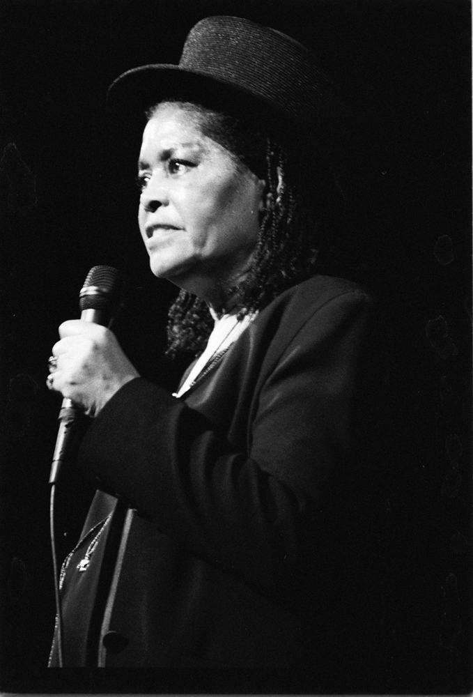

故事
她的名字換過好幾次，最後那個，是自己挑的。她本名 Anna Marie Wooldridge，1930 年生在芝加哥。年輕時她在洛杉磯和夏威夷唱歌，用過好幾個藝名。
1956 年，她選定了 Abbey Lincoln 這個名字。1960 年，她唱進鼓手 Max Roach 的專輯 We Insist!。那張專輯在講黑人爭取自由，她在裡面唱，也在吶喊。

樂評人說，這是爵士最早的大型抗議作品之一。後來她去了非洲，又替自己取了一個非洲名字。她也自己寫歌，很多歌詞都出自她的手。下次聽她唱歌，想想一個人怎麼替自己取名字。
故事後面
Abbey Lincoln 早期以夜總會歌手出道，形象比較甜美。和 Max Roach 合作後，她開始唱更直接、更有態度的歌。
《We Insist!》裡有一段她不唱歌詞，只用吶喊和呼吸表現痛苦與憤怒，當時很多人聽不慣。
後來她也寫了很多自己的歌，晚年的作品更像在說故事，咬字非常清楚。

這樣聽
只有人聲和鼓，聽聲音怎麼從禱告、到吶喊、再到平靜。
逐句英文
She changed her name several times, and she picked the last one herself.
Born Anna Marie Wooldridge in Chicago in 1930.
Singing in Los Angeles and Honolulu as a young woman, she used several stage names.
In 1956 she settled on the name Abbey Lincoln.
In 1960 she sang on drummer Max Roach's album We Insist!.
The album was about the Black freedom struggle; on it she sang, and she screamed.
A critic called it one of the first large-scale protest works in jazz.
Later, after visiting Africa, she took an African name as well.
She also wrote her own songs, many with her own lyrics.
Next time you hear her sing, think about what it means to name yourself.
查證筆記與出處
「最早的大型抗議作品」是條目引述 Nat Hentoff，原始出處待查。非洲名字 Aminata Moseka 沒唸出來。條目寫「檀香山」，稿裡寫夏威夷。
https://en.wikipedia.org/wiki/Abbey_Lincoln
https://en.wikipedia.org/wiki/We_Insist!
一分鐘影片版在 Instagram @jazz101tw。